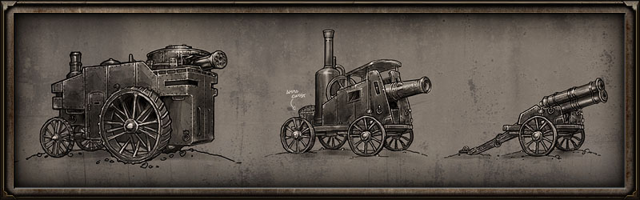

Modding

Grim Dawn will feature a powerful set of modding tools, giving players a chance to create their own content and challenges. Grim Dawn’s content will be as limitless as the imaginations of the players. Create your own worlds and share them with your friends, and even the world!
Grim Dawn’s modding tools will become available after the game’s full release.